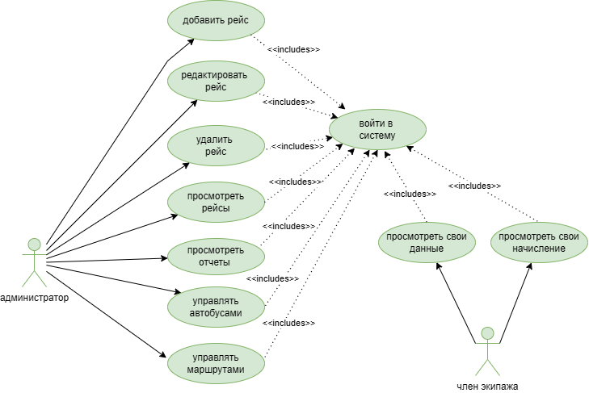

Система «Туристическое бюро» предназначена для управления маршрутами,
рейсами, автобусами и экипажами, а также для формирования отчетов.
Акторы
Администратор
Полный доступ к системе.
- управление рейсами
- управление автобусами
- управление маршрутами
- формирование отчетов
Член экипажа
Ограниченный доступ.
- просмотр личных данных
- просмотр начислений
Диаграмма вариантов использования

Варианты использования
Вход в систему
Пользователь вводит логин и пароль.
Добавление рейса
Администратор создаёт новый рейс.
Редактирование рейса
Изменение параметров рейса.
Удаление рейса
Удаление рейса из системы.
Просмотр отчетов
Формирование аналитики.
Связи
Все функции системы доступны только после успешной аутентификации пользователя.